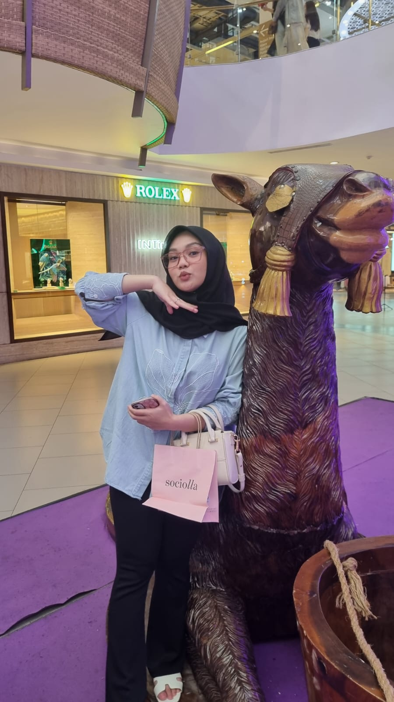
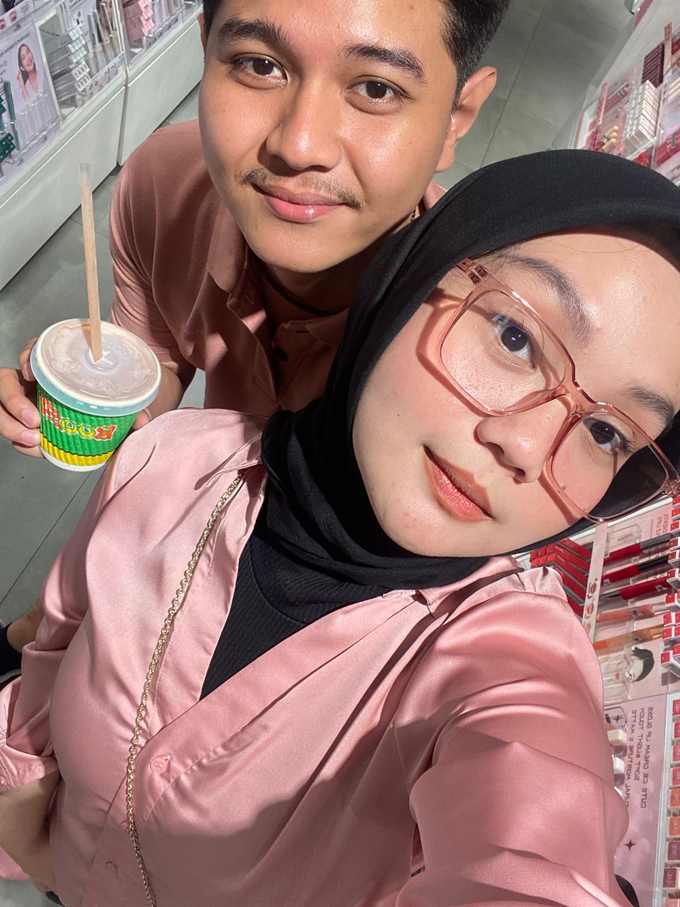
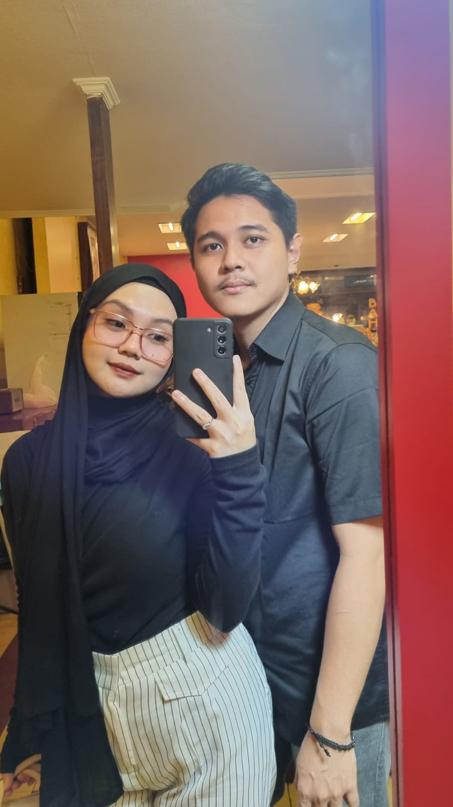
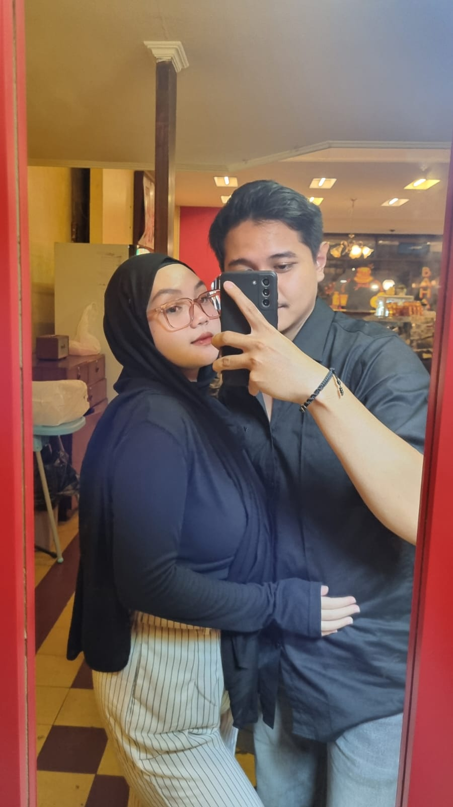

🎀

Love Always ❤️
My yittle one,
I honestly don't know how you do it, but you always manage to brighten my days simply by being by my side. You are the peace and comfort I never knew I needed.
Time flew by so fast, and suddenly we've shared a whole year filled with laughter, memories, and countless sweet moments together. Thank you for always being patient, for always staying close, and for being the biggest reason behind my smile every single day.
I am genuinely blessed to have you, and I will choose you over and over again every day. Happy 1st Anniversary, my love! I love you endlessly.
Forever yours,
(mashhmuuu)
(mashhmuuu)
🎀
❤️
❤️


